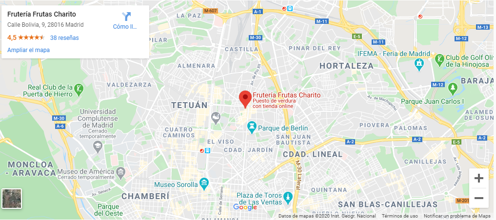

En ComeFruta queremos ser tu frutería online de confianza
Somos el lugar donde puedes acudir las 24 horas del día los 365 días del año para hacer tu compra de frutas y verduras.} Contamos con una oferta de productos variada y de calidad. En nuestra frutería online puedes encontrar una gran selección de verduras y hortalizas como tomates, cebollas, judías, calabacín, coles, lechugas. etc. Una amplía gama de frutas, desde frutas de hueso y frutas tropicales hasta un gran surtido de manzanas y plátanos de canarias. Además en nuestra frutería online dispondrás de todas ellas en la temporada más idónea y siempre con una cuidadosa selección por parte de nuestros profesionales para que disfrutes del mejor sabor.
¿DÓNDE ESTAMOS
Mercado de Chamartin C Bolivia 9, Planta baja, Bancas 2-8 Metro Colombia Autobus: 7, 11, 16, 29, 40, 51 Parking concertado 1ª hora gratis (solicite su vale descuento).